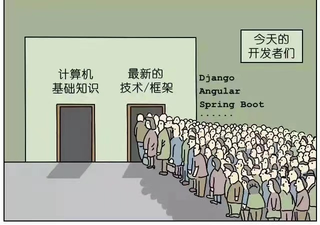

在公司快10年,到目前为止,我职业生涯的一半时间都在这里度过.前几年,有幸和一群老伙伴们一起从零开始搭建了公司内容中心的架构与业务.目前这套业务架构已经运行7年了.在这7年内,技术架构也又有了一定的改变:有的组件已经被替换,有的直接下线,有的已经交给同事维护,有的还在运行.当时戏称的5年计划也基本算是完成了任务.当然这套架构不管是业务的还是技术的,中间的东西肯定不仅仅是我们看到和使用的哪些点,随着时间流逝和检验,这套架构应该被拿出来说一说.
这几年内,发生了很多故事.但是恒定未变的是”业务支配下的事情”;这几年内,市面上的架构层出不穷,但是恒定未变的是”CAP支配下的内存,CPU和磁盘”;这几年内,名词被各种创造,概念被反复热炒,甚至连技术书的出版者都问我”你觉得不清楚docker会不会影响后续的工作?我反问她:前几年的Ajax你接触了吗?那么现在对你有什么影响吗?所以还是恒定未变的是”一阵云烟过后未曾留下片语的尴尬”.经典才值得永恒.花里胡哨的眼花缭乱往往只能一时间吸引眼球,如果你对这条有所怀疑,那么去国金中心看看,那里的店员绝对会告诉你卖的最好的永远是那几个经典款,并且还会一直热卖下去.
虽然说事情和环境一直是变化的,对于变化来说唯一不变的就是变化本身.但对于架构来说,时而…时而…肯定只是适用于追求花哨的前端.对于后端,稳定才是要考虑的第一要素.日新月异的各种层出不穷虽然在PPT中很有市场,也能在汇报中紧抓眼球,甚至都能帮助你能更快的拿到offer,但殊不知面向”名词编程”的最后往往都是一地鸡毛.以我们目前所能碰到的问题的解决方案为例,几乎所有的解决方案都已经在<<操作系统>>这本书中给你说的明明白白清清楚楚,但是又有多少人能真正的理解和灵活掌握?回过来看,<<操作系统>>这本书的理论与实践也是日日变更,次次追新的吗?

架构没有好坏,只有适合与不适合;架构也没有先进与落后,只有熟悉与不熟悉;架构更没有的是架构,只有随心所动,化有形于无形.架构的真谛如果仅仅在于架,那只能自欺欺人的跳梁罢了!
所以也是想写点啥.毕竟伟人名言:实践出真知.
架构忏悔录是一序列的文章,这一序列文章的灵感来自于突然的心血来潮,这几天在整理blog,迁移blog框架,看到blog的文章都是几年前所写,最近一直没有任何的沉淀,好似形而上学.虽然一时间确实也不知道能写点啥,该写点啥,真是有点摸不着头脑似的黔驴技穷.但回想起这几年做的事情,经历的挫折,实现的技术还确实是值得一写的.至少,这几年内我夯实了”实践”这个唯一的检验标准.对于处于这个时代的程序员,大部分的现实是:
- 很少有机会能去从零开始架构一个东西的,更多的都是在做一些缝缝补补的工作;
- 很少有机会能接触到正在的架构,更多的都是”面向开源”编程;
- 很少有机会能完全按照自己的想法编程,更多的是被动的业务需求的压榨;
- 很少有机会能把自己的想法实现,更多的是你不需要想,只要”堆”就可以;
- 很少有机会能把自己的理解运用到线上产生价值,更多的是”当好这个萝卜”;
- 很少有机会实现技术型原创劳作,更多的是”拿来主义”原则;
- 很少有机会重复造轮子,更多的是被”不需要的现实”阻碍;
然而作为一个技术人员,这些很少有的机会在我这里竟然全部变成了一个个的现实摆在我的面前,同时也是一座座摆在我眼前的大山,我和我的那些老伙伴们需要在极短的时间内移掉这些压在团队上的大山,美梦与压力同在,机遇与能力同行.
得益于上天的眷恋,最后我们还是解决了碰到的各种问题,随着时间的流逝,当年的”5年计划”从开始的鸡飞狗跳到后来的偶有瑕疵,一步一步的经过了时间的历练和洗礼.时间是唯一能证明正确性的正确的东西.从整个过程和淬炼后的马后炮来看,对于当时的某些决定\某些操作\某些想法还是有一定值得讨论的空间:哪些做法是值得称赞?哪些决定现在看是不太好的?甚至哪些方面现在看完全就是错误的......纵观种种,都是非常有价值的东西.站在当前经历过变化的时间演练上,回望过去,把这个梦中最后价值的东西记录下来,这才是价值连城的精髓.
序言,仅仅只是序言.俗称:发发牢骚,圈定一下整个序列的形式与内容.鉴于以前的blog文章都是大篇大篇的情况,看着很累,其实我写着也很累.所以这次需要改变一下方式:尽量让每一篇文章都短小精悍.一篇以一个问题或者一个观点为主,尽量在有限的篇幅内说清楚优缺点,改进措施,坚持观念.这种聚焦于一个一个小点的方式我希望能让我更好的叙述清楚的问题和意图.能好的表达我的想法和对架构的评价.
回顾这几年的工作,在我们的架构体系中,我们使用了java和c两种语言来实现我们的各种组件.后来又接了一个微服务的架构工作,使用的是cxx.为了完整性,我会把这部分的内容也加入进去,所以到此,具体的组件一共有以下几个:
- albianj: 一个java开发的技术栈框架,主要完成了IoC和带有分库分表的ORM功能;
- sched: 一个java开发的,基于cron表达式而运行的任务调度器,主要为我们的后端计算服务提供基于时间的任务调度;
- dfs: 基于c语言开发的分布式文件系统,主要为我们提供大小文件的存储服务;
- idcreator:基于c语言开发的id生成器,用于为全站生成各种数据库主键id,为分库分表提供data router的基础能力;
- Aura: 基于java和c开发的http服务,玩票性质的开始,没想到后面派上大用场;
- Lest:基于c开发的类redis服务,因为各种原因后续下线,也是比较遗憾的之一;
- Lax:基于c开发的分布式锁与版本提供服务,主要为Lest提供服务;
- Tars:后续改进腾讯的开源版本,打算为我们提供微服务框架,后续因调整而未能如愿;
- Report&Alarm: 配合tars增加的报表与报警服务,是为tars填补空白的一块;
- config:基于java开发的配置服务,主要为微服务提供配置服务,后续因为架构调整的原因为上线,是最遗憾的一个项目;
整个序列的文章将会以这些组件为基准,进行各个方面的阐述和论断.里面有一些是我自己亲手一个人实现的,也有一些是我设计,同事实现的,还有是带领团队更改的开源产品.就从这些组件的全面性上考虑,能碰上的类型都齐全了.其次,在架构的过程中,不考虑当时的人,环境,服务器等问题的话,基本上就相当于”脱离了问题的基本面”,所以如果有必要,我也会说明当时的各种情况,用于从侧面印证和说明问题的决定.希望我能完整并且清楚的在线当时的各种纠结与果断.